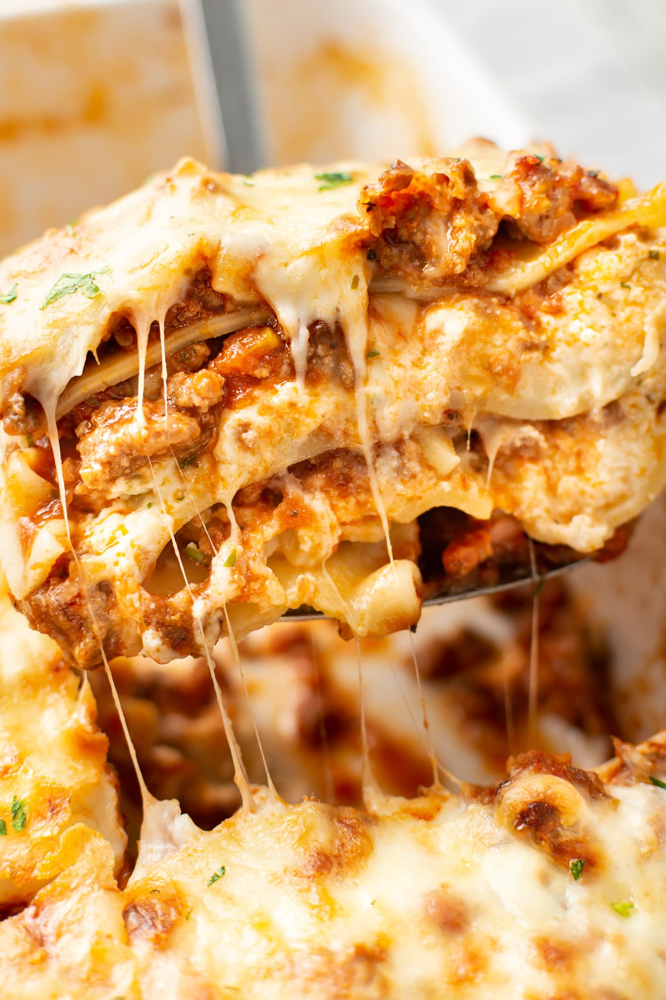

Pagatavoto lazanju
labāk apēst pašam,
nekā dot izdevību
runcim
Nepieciešamās sastāvdaļas
Maltās gaļas pagatavošanai: |
Bešamel mērcei ar 2 veidu sieriem: |


|
|
|
|
| + 1 paka lazanjas makaronu | Pagatavošanas laiks- 90 min. |
Pagatavošana pa soļiem
1. solis
Uz pannas izkausētā sviestā aši apcep kriksīšos sagrieztu sīpolu, tad pievieno un apcep nomizotu un sarīvētu burkānu, tad pannas saturam pievieno arī malto gaļu, maisot apcep un visu pārlej ar tomātu gabaliņiem savā sulā un iemaisa tomātu pastu.
Uz pannas izkausētā sviestā aši apcep kriksīšos sagrieztu sīpolu, tad pievieno un apcep nomizotu un sarīvētu burkānu, tad pannas saturam pievieno arī malto gaļu, maisot apcep un visu pārlej ar tomātu gabaliņiem savā sulā un iemaisa tomātu pastu.
2. solis
Pannai uzliek vāku un tās saturu sautē kādas 10 - 15 minūtes. Pašās beigās iemaisa izspiestas ķiploka daiviņas, pievieno sāli un maltus melnos piparus.
Pannai uzliek vāku un tās saturu sautē kādas 10 - 15 minūtes. Pašās beigās iemaisa izspiestas ķiploka daiviņas, pievieno sāli un maltus melnos piparus.
3. solis
Citā pannā gatavo otru mērci - izkausētā sviestā uz vidējas uguns maisot apcep miltus, tad pannu pa pusei nobīda no karstuma avota (vai vienkārši samazina karstumu) un leenītiņām, leeenītiņām pievieno pienu (tas jādara lēnām, lēnām un aktīvi maisot, lai neveidotos kunkuļi, bet beigu beigās mērce būtu viendabīga un krēmīga).
Citā pannā gatavo otru mērci - izkausētā sviestā uz vidējas uguns maisot apcep miltus, tad pannu pa pusei nobīda no karstuma avota (vai vienkārši samazina karstumu) un leenītiņām, leeenītiņām pievieno pienu (tas jādara lēnām, lēnām un aktīvi maisot, lai neveidotos kunkuļi, bet beigu beigās mērce būtu viendabīga un krēmīga).
4. solis
Kad pievienots viss piens, tad iemaisa sarīvētus Parmezāna un Holandes sierus (vienu saujiņu pataupa lazanjas pārkaisīšanai pirms cepšanas), sāli pēc garšas (ar tādu paprāvu šķipsniņu, manuprāt, būs gana) un svaigi rīvētu muskatriekstu.
Kad pievienots viss piens, tad iemaisa sarīvētus Parmezāna un Holandes sierus (vienu saujiņu pataupa lazanjas pārkaisīšanai pirms cepšanas), sāli pēc garšas (ar tādu paprāvu šķipsniņu, manuprāt, būs gana) un svaigi rīvētu muskatriekstu.
5. solis
Ķeras pie lazanjas sakārtošanas - apmēram 28 x 24 cm lielas cepampannas apakšā izlīdzina kādu kausiņu maltās gaļas mērces, virs tās izkārto lazanjas plāksnes, virs tām atkal liek maltās gaļas mērci, ko pārklāj ar sieraino bešamel mērci, tad atkal liek lazanjas plāksnes, atkārto gājienu ar abām mērcēm, tad uzstutē vēl trešo kārtu ar lazanjas plāksnēm un visbeidzot visu pārklāj ar balto mērci un pārber ar to atlikušo saujiņu sarīvēto sieru.
Ķeras pie lazanjas sakārtošanas - apmēram 28 x 24 cm lielas cepampannas apakšā izlīdzina kādu kausiņu maltās gaļas mērces, virs tās izkārto lazanjas plāksnes, virs tām atkal liek maltās gaļas mērci, ko pārklāj ar sieraino bešamel mērci, tad atkal liek lazanjas plāksnes, atkārto gājienu ar abām mērcēm, tad uzstutē vēl trešo kārtu ar lazanjas plāksnēm un visbeidzot visu pārklāj ar balto mērci un pārber ar to atlikušo saujiņu sarīvēto sieru.
6. solis
Pannu liek līdz 180°C sakarsētā cepeškrāsnī, lazanju gatavo apmēram 25 minūtes (šeit svarīga piezīme - lazanjas plāksnes ir atšķirīga biezuma, tāpēc vēlams pārliecināties, vai tās ir gatavas ap šo brīdi un, ja tomēr vēl nav, tad nedaudz vēl cepšanu paturpināt), tad cepeškrāsni pārregulē ventilatora režīmā un apbrūnina sierīgā sacepuma virspusi vēl apmēram 7 - 10 minūtes.
Pannu liek līdz 180°C sakarsētā cepeškrāsnī, lazanju gatavo apmēram 25 minūtes (šeit svarīga piezīme - lazanjas plāksnes ir atšķirīga biezuma, tāpēc vēlams pārliecināties, vai tās ir gatavas ap šo brīdi un, ja tomēr vēl nav, tad nedaudz vēl cepšanu paturpināt), tad cepeškrāsni pārregulē ventilatora režīmā un apbrūnina sierīgā sacepuma virspusi vēl apmēram 7 - 10 minūtes.
7. solis
Izņem no krāsns, pirms griešanas atpūtina apmēram 15 - 20 minūtes (tad to būs iespējams daudz glītāk sadalīt), tad pasniedz. Lai laba apetīte daudziem vēderiem!
Izņem no krāsns, pirms griešanas atpūtina apmēram 15 - 20 minūtes (tad to būs iespējams daudz glītāk sadalīt), tad pasniedz. Lai laba apetīte daudziem vēderiem!
Fakti par kaķiem
Loading...